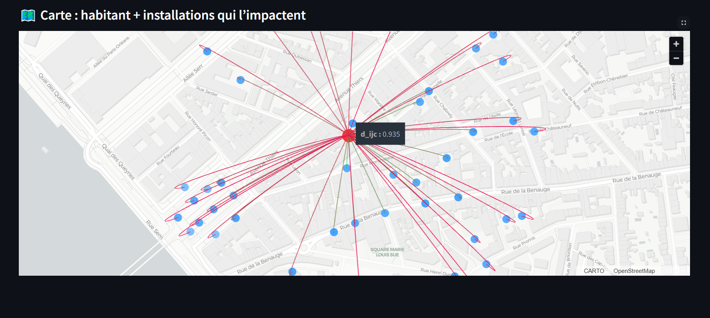
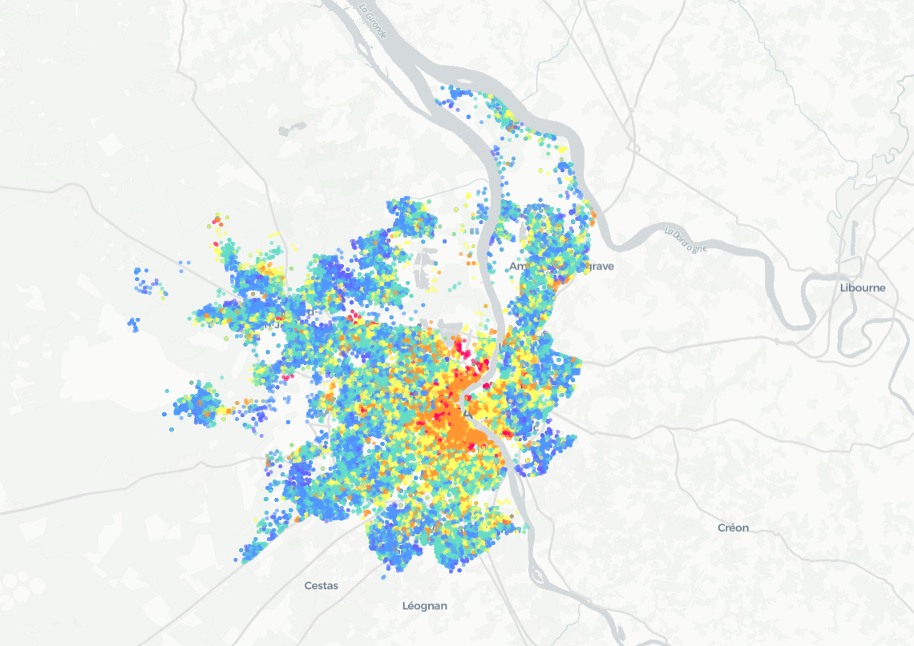
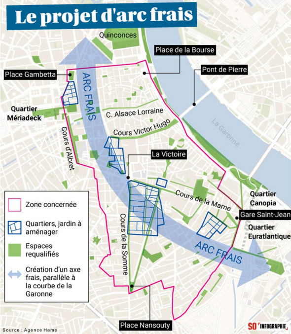
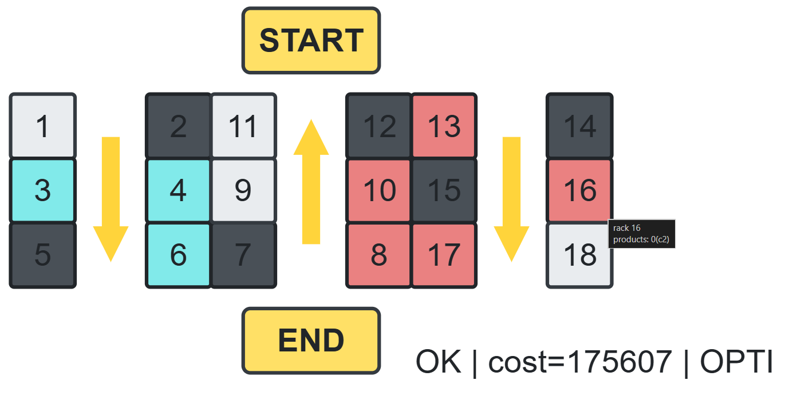
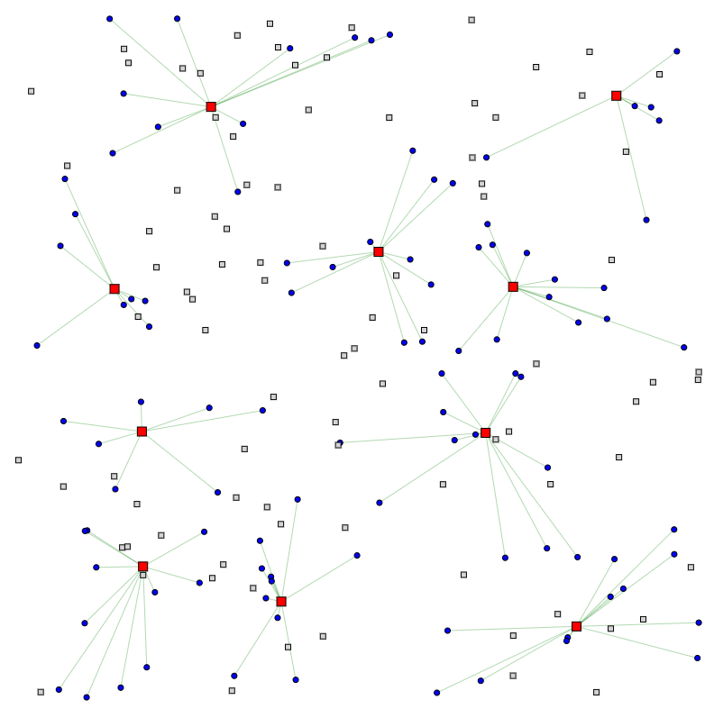
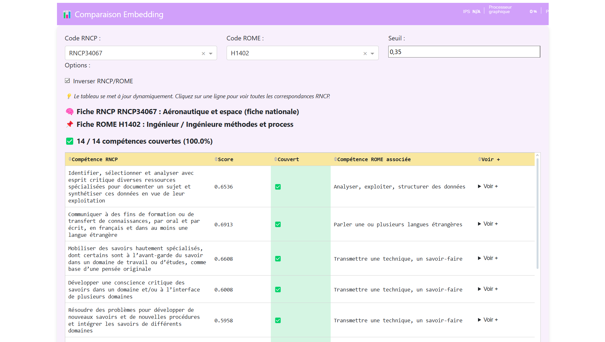
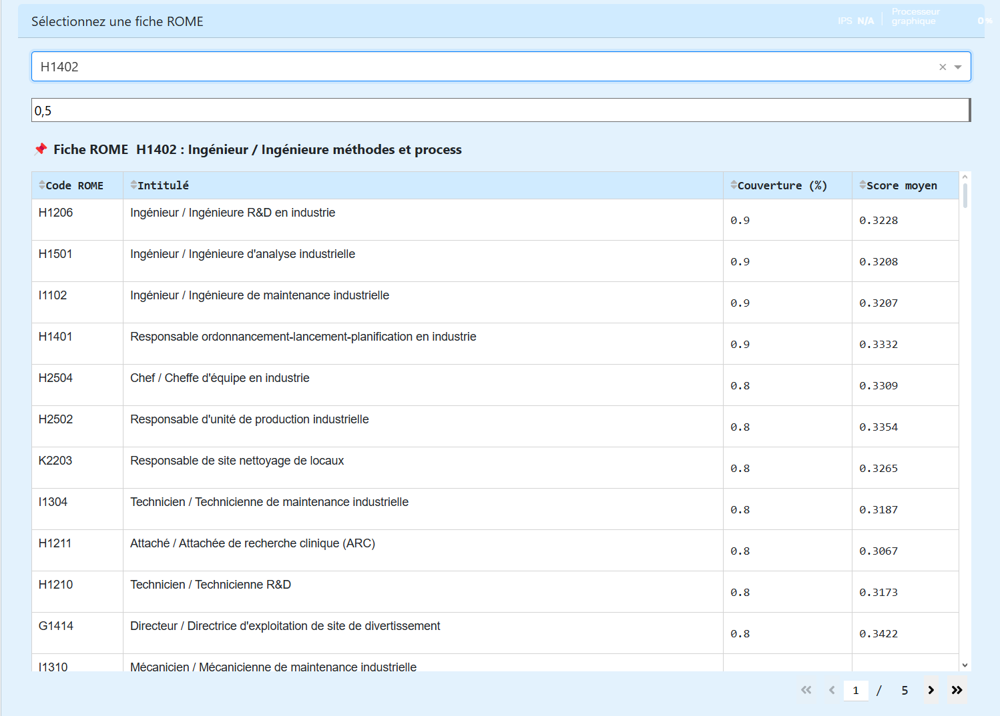
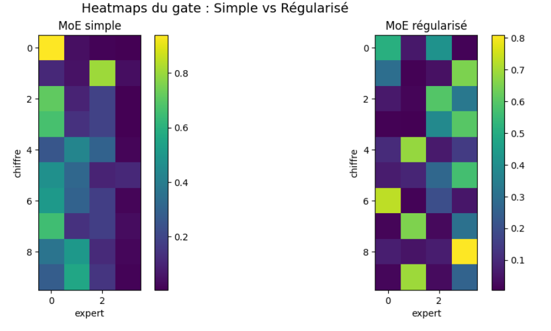
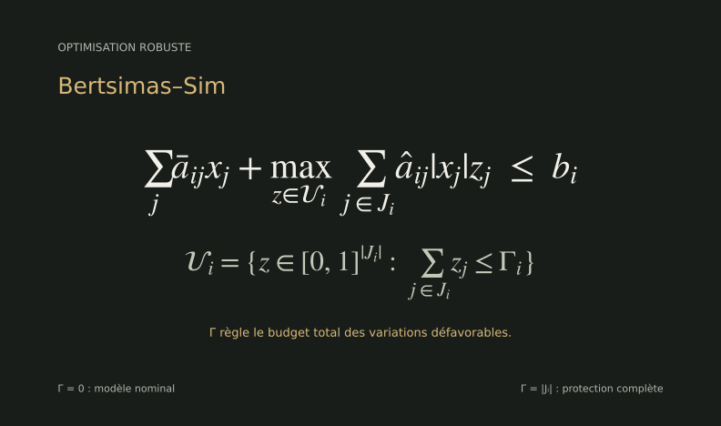

Intelligence artificielle
Analyser les données et le langage pour comparer, classer et recommander.
PyTorchscikit-learnNLPFAISS
À l’écoute d’opportunités · Supply Chain & IA
Bonjour, je suis
Supply Chain & Intelligence artificielle
Ingénieur, je combine Data Science et recherche opérationnelle pour mieux organiser les flux, exploiter les données et éclairer les décisions.
Diplômé du Master CMI OPTIM de l'Université de Bordeaux, je me spécialise dans les méthodes d'optimisation, l'algorithmique et l'intelligence artificielle appliquée.
Chez ALTEN, j’ai travaillé sur l’optimisation de tournées avec du Machine Learning (Gradient Boosting, ALNS) et des comparaisons à des modèles MILP. Au LaBRI, j’ai conçu un prototype NLP de recommandation de métiers à partir de CV.
Je m'intéresse autant à la qualité d'un modèle qu'à son intégration dans un outil clair, utile et exploitable.
Échangeons sur vos projetsTraduire un besoin réel en question mathématique ou data.
Choisir des modèles, algorithmes et outils adaptés.
Mesurer, comparer et rendre les résultats compréhensibles.
Trois domaines complémentaires pour passer du problème à une solution exploitable.
Analyser les données et le langage pour comparer, classer et recommander.
Modéliser les contraintes et chercher les meilleures décisions possibles.
Construire des outils scientifiques et des interfaces pour explorer les résultats.
Des questions concrètes, des méthodes et des résultats. Cliquez sur les images pour les explorer en détail.



Aider à choisir où créer des points de rafraîchissement.






Envie de voir plus de code et d'expérimentations ?
Explorer tous mes dépôtsDéveloppement d’un modèle Gradient Boosting pour guider les liaisons d’un algorithme ALNS ; comparaison à une formulation MILP avec Pyomo/Gurobi.
Heuristiques Python/C++ visant à réduire les distances de préparation des commandes et contribution à une approche DQN.
Université de Bordeaux · Optimisation mathématique, algorithmique et aide à la décision. Formation finalisée en 2026.
Université de Bordeaux · Développement d'outils de rapprochement de compétences et d'analyse de CV, combinant NLP et visualisation de graphes.
Cours en intelligence artificielle, mathématiques discrètes, réseaux et programmation orientée objet.
Un poste en Supply Chain ou en IA, un projet en Data Science ou en recherche opérationnelle ? Je serais ravi d’échanger.
Bordeaux · Mobilité en France · Télétravail
PROFIL GITHUBgithub.com/QuattrochiEnzo LINKEDINVoir mon profil LinkedIn ↗CURRICULUM VITAEConsulter mon CV (PDF) ↗